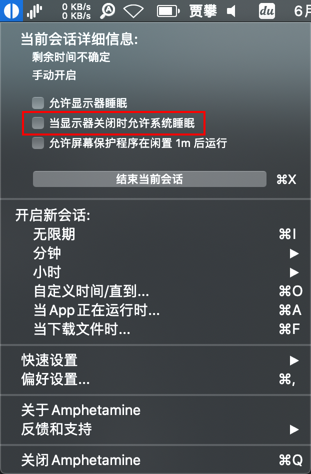
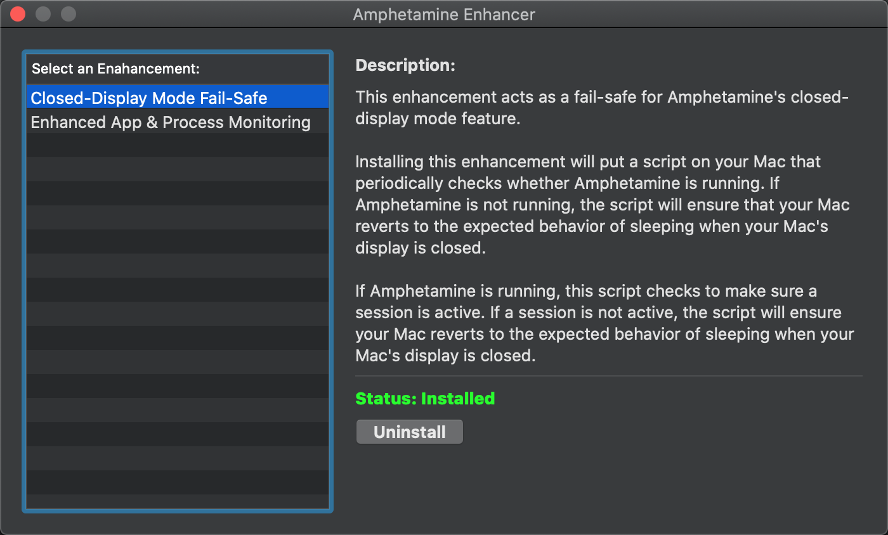
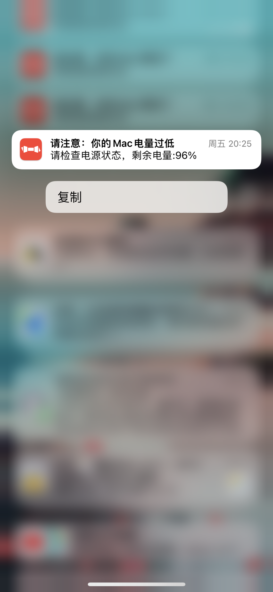
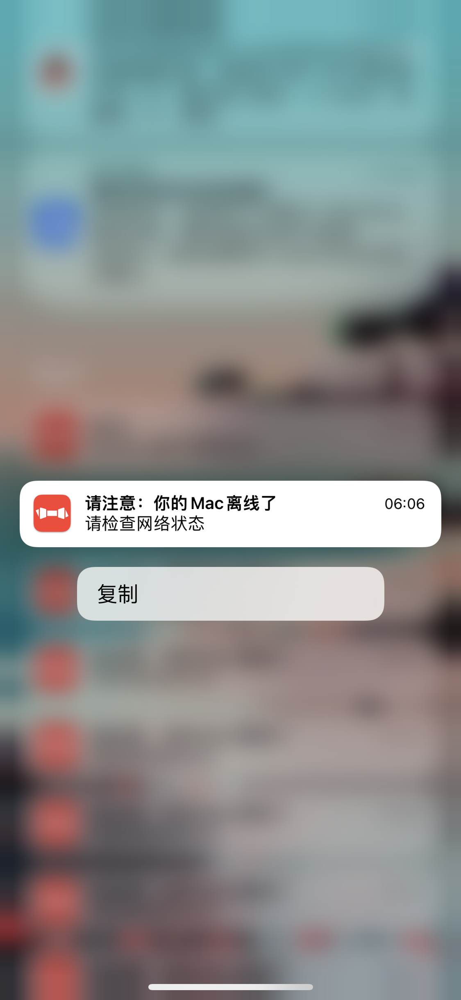
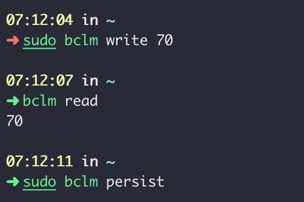
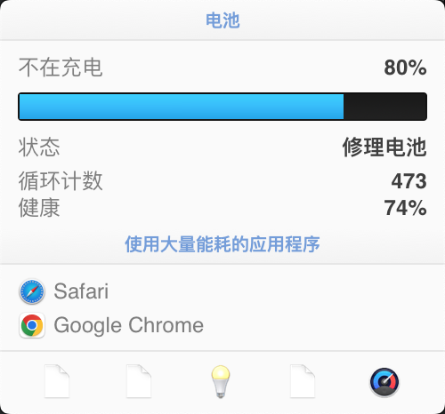

这段时间在家办公，家里的网络无法进行科学上网，不过我的所有设备上都装有 Surge，所以科学上网这件事对我倒是没太大影响，但有一个不方便的点是在需要访问公司内网的一些资源时（比如 Gitlab、有敏感数据的后台），需要先连接上 EasyConnect（即 VPN） 才可以访问。我平时使用 Surge 习惯开启「增强模式」，这样 Surge 可以接管我的全部网络，就不用再在一些软件中单独配置代理了，比如 iTerm、GoLand、Telegram。不过 EasyConnect 和 Surge 的「增强模式」有冲突，在开启「增强模式」时是无法使用 EasyConnect 的，每次都要先停用「增强模式」才行。具体冲突的原因在原理上我不是很清楚，我猜测是因为它们两个都是要接管所有网卡流量导致的。
为了解决这个问题，也为了让家里所有设备都能实现无感知地科学上网，同时还可以做一些广告屏蔽和隐私保护，我准备使用我那台早已配淘汰了的 15 年 13 寸 Mac 做一个软路由。我所参考的教程是：https://qust.me/post/MacSurgeRouter/ ，博主还非常贴心的录制了视频：https://www.youtube.com/watch?v=68lcT7ItyP4 。不管是文章还是视频，都将如何配置软路由介绍的非常详细了，我在本文中补充几点配置好后我们还可以做的那些辅助工作。
让 Mac 合盖后不休眠
我一直使用 Amphetamine 这个小工具来让我的电脑在我需要的时候保持不休眠状态。
如果我们需要合盖后继续保持让设备不休眠，需要取消掉「当显示器关闭时允许系统休眠」的选项。

在取消这个选项时，Amphetamine 会提醒我们安装一个增强工具（Amphetamine EnHancer），用来保护我们的电脑，这里我也建议安装，安装后需要将增强工具内置的两个组件也要安装上才算启用成功。

设备断网和低电量提醒
由于我的 13 寸 Mac 和公司配的 15 寸 Mac 电源适配器相同，所以我经常会让两个设备使用同一个电源，哪个没电了充哪个——我日常都是用自己的M1 Pro 所以不会太频繁给公司电脑充电，用一个电源足够。由于作为软路由的 13 寸 Mac 长时间处于合盖状态，我不知道它的剩余电量，有一次充 15 寸 Mac 后忘了充回去，导致晚上设备因没电关机了。我一开始只是发现手机无法连上 WIFI，以为是信号弱，但是到路由器旁边依然连不上，后来才想到是电脑关机了。因为电脑接管了 DHCP 服务，手机分配不到 IP 自然无法连上。
为了避免这种情况，同时也为了避免不小心报错网线，我简单写了一个监控脚本来监控设备的状态。
脚本实现功能如下：
- 判断网络状况：定期 ping 一个地址，这个地址我跑在 AWS 的 Lambda 上，服务收到请求后记录最新请求时间，服务自身也会有定时任务检查上一次请求时间和当前时间的差值，如果超过一个阈值，则通过 Bark 给我发个推送。
- 监控设备电量：当低于某个阈值时通过 Bark 提醒我。
可以看出这个监控需要两组脚本，一个是部署在 Lambda 上的，用来判断设备网络情况，另一个是客户端本地用来 ping 服务和监控电量。
先来看启动在 Lambda 上的 handler：
1 | def mac_health(event, context): |
serverless.yml：
1 | functions: |
这里我不再介绍 Lambda 如何使用，可以参考我之前的其他文章：
- https://jiapan.me/2022/use-aws-lambda-delete-s3-regularly/
- https://jiapan.me/2022/use-aws-lambda-push-blog-comment/
上边代码我做个补充说明：
- Lambda 是完全无状态的服务，而且随时有可能被 kill 然后启动在其它实例上，所以我们最好不要将最后 ping 时间记录在内存中，如果也不想借助外部存储的话，我们可以借助
/tmp目录来临时存储这个数据，AWS 为每个 Lambda 提供 500MB/tmp下的存储空间。 - 我在用 Mac 访问 Lambda endpoint 的时候会带上
?update=1这个参数，这样就可以把最新时间记录下来，而系统通过 cronjob 调用自己的时候不记录时间，只进行时间差判断。
再来看下Mac断的脚本：
1 | import os |
逻辑也比较简单，这里是通过一个系统 shell 调用来获取的电量。
将电脑电源拔掉，把报警阈值调到 97 的效果：

拔掉网线后的效果：

将最大充电量设置为 70%
电脑像这样长期插着电源并保持开机状态对电池的损耗非常大，为了避免对电池损耗过快，建议将最大充电量设置为 60%-80% 之间，我们可以借助 bclm 这个小工具实现，工具名是 Battery Charge Level Max 的缩写。安装方式参考官方文档，我自己是将二进制包下下来放到 bin（/usr/local/bin） 目录来直接使用的。
bclm 提供命令非常简单：
1 | 获取当前电池的最大充电量 |

当前我的剩余电量是 84%，通过其他监控工具可以看到即使我插上充电器，也不会进入充电状态：

（电池已经要不行了 👋🏻）
最后
软路由用了两周多了，给我最明显的体验是，电视上之前每次开机都要等待的 60 秒广告没有了；因为在我的工作 Mac 上已经不用再运行 Surge，在连公司网络 VPN 时也不用先去关闭 Surge 的 「增强模式」了。
也存在不方便的地方，我在外边使用手机，通过流量上网的时候要手动打开 Surge，而到家连上 WIFI 后又要手动关闭，如果忘记操作就会有打不开网站的情况。不知道能否通过快捷指令将个操作自动化，我目前还没有找到自动化解决方案。